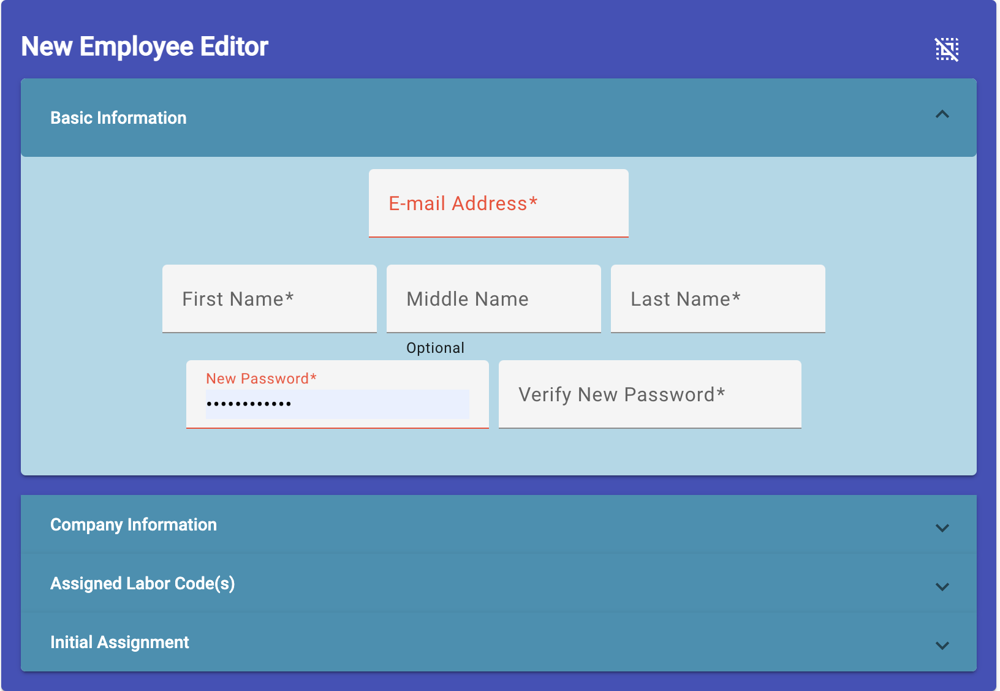
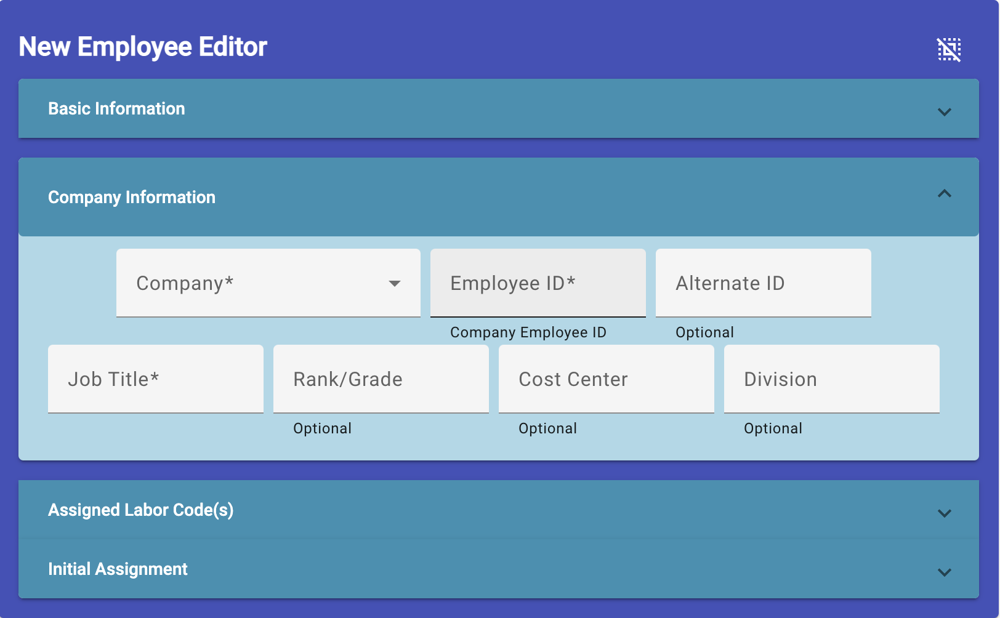
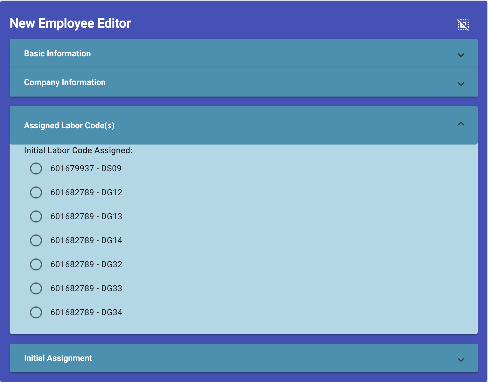
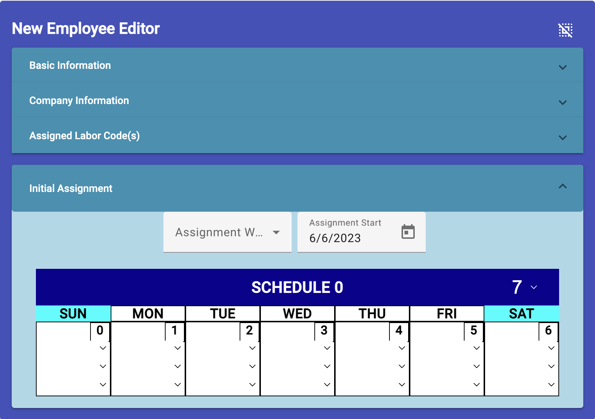

Add Employee Editor
(Site Scheduler/Leadership only)
-
Select Add Employee - This is a button at the top of the employee
list. By clicking on this employee choice, it will open the New Employee
form to allow you to give the minimum information to create an employee.
-
Minimum Information - To provide the minimum information the "New
Employee Editor" provides four sections for the information entry.

-
Panel 1: Enter in the required information of Email Address,
first and last name, a new password, plus verify that password. It is
optional that you include a middle initial or name. After entering in
the required information, click on "Company Information" header to go
to the next panel.

-
Panel 2: Select in the employee's company and type in their
company employee id and a job title. The other information is
optional. After entry, click on "Assigned Labor Code(s)" header to go
to this panel.

-
Panel 3: This is an optional information selector, select the
new employee's primary labor code he/she will use in their timecard
system. You don't have to select any of the available codes.

-
Panel 4: All the fields are mandatory on this panel.
- Select the work center the employee will work in.
- Click the calendar icon in the "Assignment Start" space to
select the employee's start date or first day of work at the site.
-
Next, next to "Schedule 0" is a selector for choosing the number
of days in the employee's schedule. All schedules start on a
Sunday and the number of days is a multiple of 7 or week. After
changing the number of days, the schedule will display that number
of day boxes for the schedule.
,
-
In each day box where the employee will be working, select the
work code, work center and number of hours for the days he/she
will be working.
-
Sending the Information to the Server: After all the required
information is entered or selected, an "Add" button will display at
the bottom of the form. Click it to send the information to the
server to create the employee. An authentication record will be
create at this time automatically with the employee role.
Employee Editor Overview
Selecting an Employee to Edit